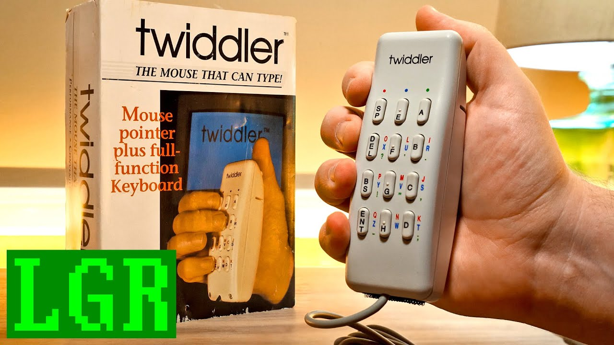

Twiddler
A keyboard in one hand
Overview
The Twiddler is a handheld, one-handed chording keyboard that also functions as a mouse. Launched in 1992 by HandyKey Corporation, it is designed for mobile and wearable computing: users hold it in one hand and press combinations (chords) of keys to type characters, while a thumb-controlled pointer or motion sensors act as a pointing device.
Deep dive
The original Twiddler communicated over a serial port and drew power from a PC/AT keyboard port. Later revisions added USB (Twiddler 2.1), Bluetooth, and haptic feedback (Twiddler 3). The Twiddler became a fixture in the MIT Wearable Computing Group and related wearable-computing research: Thad Starner and other early wearable pioneers used it for one-handed text entry while walking. A CHI 2004 Georgia Tech study found that an experienced Twiddler user could average roughly 60 words per minute with letter-by-letter typing of standard phrases. HandyKey was acquired by Canadian firm Tek Gear in 2007. In 2024 the Twiddler 4 was announced with USB-C or Bluetooth connectivity and an optical trackpad replacing the earlier joystick.
The Twiddler packs keyboard, mouse, and (in later models) motion control into a device small enough to hold in one hand. It is a rare example of a 1990s input device still in active development more than 30 years later.
Team & pioneers
- Lyndon Venancio Engineer credited with the original design of the Twiddler one-handed chord keyboard.
- Handykey Corporation Company formed to manufacture and sell the Twiddler to wearable-computing researchers and mobile users.
- MIT Media Lab Wearable Computing Group Early adopters who pushed the device to 60 words per minute while walking and helped refine the one-handed input paradigm.
Media

Sources
- Wikipedia, “Twiddler”
- New Atlas, “Learning the one-handed Twiddler3 keyboard a challenge worth taking”
- The Register, “Come and Twiddle Tek Gear's one handed keyboard”
- Lyngbäck et al. / Georgia Tech, “Twiddler Typing: One-Handed Chording Text Entry for Mobile Phones” (CHI 2004)
- YouTube, “LGR Oddware: Twiddler Motion Controlled Keyboard Mouse from 1992”
- YouTube, “Twiddlering!”